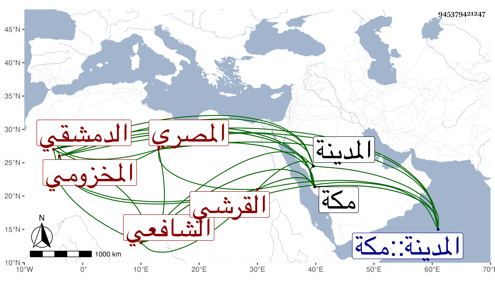

0902Sakhawi.DawLamic.ITO20230111-ara1.EIS1600.945379421247
Biography ID: 945379421247
320
محمد بن يوسف بن محمد بن معالي الشمس أبو الفضل بن الجمال القرشي المخزومي الدمشقي ثم المصري الشافعي والد محمد وأخو الشهاب أحمد أبي محمد المذكورين ونزيل الحرمين ويعرف بابن الزعيفريني . سمع على شيخنا والمجد البرماوي ومما سمعه منه السيرة النبوية لابن هشام بقراءة ابن حسان بل قرأ على العز بن الفرات . وذكر لي ولده أن مجموع إقامته بالمدينة أربعا وعشرين سنة لم يتخللها إلا اليسير في الحج وبعض مجاورة بمكة وكان فاضلا خيرا متعبدا كثير المحاسن أخذ عنه غير واحد وصحبه يحيى بن أحمد الزندوي وحكى لنا عنه ما سيأتي في ترجمته وكتب عنه حسين الفتحي شيئا من نظم أخيه أحمد . مات في يوم الأربعاء ثامن عشرى ذي الحجة سنة ست وستين بمكة ومن أرخه سنة سبع وخمسين فقد غلط رحمه الله ونفعنا به .
